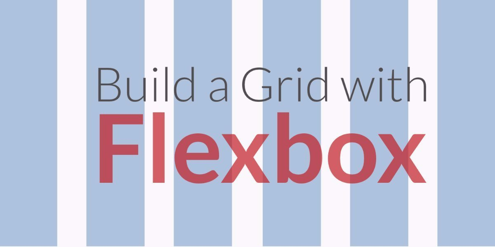

Flexbox layout module, makes it easier to design flexbox responsive layout struture without having to use floats and positioning
CSS Grid layout module offers grid based layout system without having to use floats and positioning